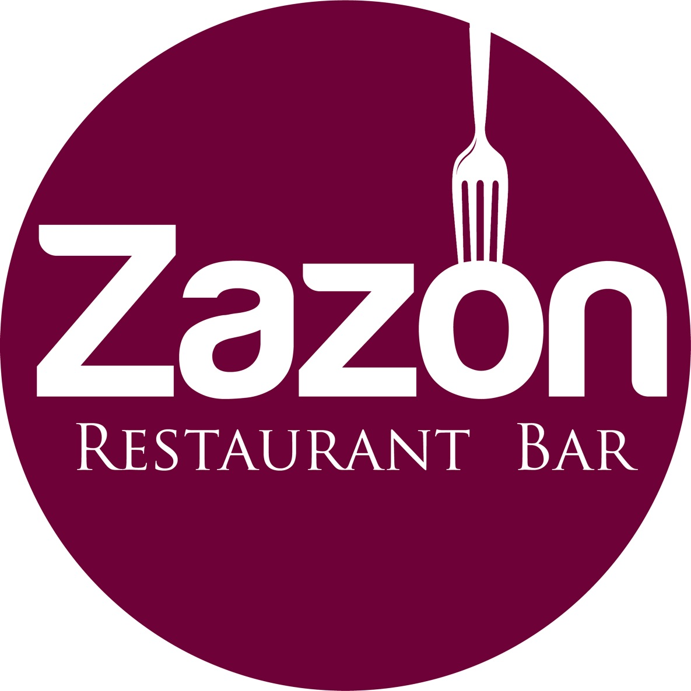

Bienvenidos al Sitio Web de Zazón
Este sitio se encuentra actualmente en construcción, sin embargo pronto estará dispoible para todos nuestros clientes y al público en general.
¿ Quienes Somos ?
Somos un Restaurante de Alta Cocina en el cual ofrecemos una amplia variedad de platillos.
Visitanos
Zazon, Restaurant BarPlaza Alegra
Avenida Guadalupe No. 6000 Local 31
Col.Plaza Guadalupe
Zapopan, Jalisco, México
C.P. 45036
Tel: (33) 12-04-98-06
Ver mapa más grande